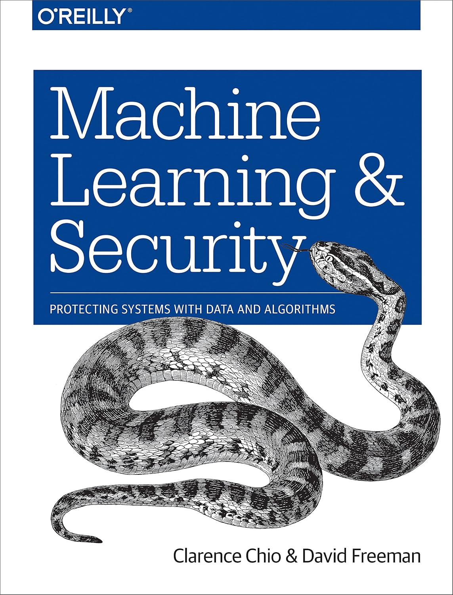

About Me
I am a data scientist / software engineer / security researcher with a Ph.D. in cryptography and a passion for using math and statistics to keep the Internet safe.
I spent 14 years building and leading teams at Meta and LinkedIn to address problems such as fake & compromised accounts; impersonation & identity verification; fraud, spam, & phishing; user data scraping; and measurement of all of the above.
I have published 27 research papers in cryptography and computer security and chaired international security workshops including Usenix Enigma, CCS AISec, and Fighting Abuse@Scale.
I currently live in the San Francisco Bay Area with my wife, two daughters, and five black cats.*
Consulting
I am available to advise on security-related projects. My areas of expertise include:
- Risk assessment (e.g. quantifying attcker prevalence and intervention effectiveness)
- Data science (e.g. signal collection and analysis for attack detection)
- Data infrastructure (e.g. logging and data management for full-system visibility)
- AI/Machine Learning (e.g. training, validation, deployment)
- User-facing security features (e.g. authentication flows)
- Research and technical writing (e.g. papers, talks)
- Building security engineering teams (e.g. interviewing, onboarding, career development)
Contact me to discuss your project!
Resources
Here are some presentations that give an overview of my work:
- My KISA 2026 talk looks at how AI will change the landscape of fighting internet abuse at scale.
- My Enigma 2020 talk describes good and bad approaches to measuring abuse on the internet.
- My ScAINet 2018 talk presents some of the challenges in using machine learning for security in the real world.
- My Enigma 2016 talk shows some approaches to protecting accounts from being taken over.
- My Strata 2015 talk gives an overview of the kinds of anti-abuse systems I work on.
In addition, my book on Machine Learning and Security contains everything I knew about the topic (as of late 2017).
Academic Background
I received my Ph.D. in Mathematics from the University of California, Berkeley. My Ph.D. advisors were Ken Ribet (UC Berkeley) and Ed Schaefer (Santa Clara University). Following my Ph.D., I was an NSF postdoctoral fellow at CWI, Amsterdam and Universiteit Leiden under the supervision of Ronald Cramer. I then spent three years as a postdoctoral scholar at Stanford under the supervision of Dan Boneh.
My thesis and postdoctoral research focused on cryptographic applications of number theory and arithmetic geometry. Projects included elliptic and hyperelliptic curve cryptography, pairing-based systems, and post-quantum cryptography.
My undergraduate degree is from Harvard (Chemistry and Physics and Mathematics) and I have a master's degree from Cambridge (Part III Maths).
* Technically four black cats and one gray cat, but we call the gray one "light black."
{kind=link}
Books
 |
Machine Learning and Security: Protecting Systems with Data and Algorithms O'Reilly Media, 2018 |
Research at Meta
-
29Predictive Response Optimization: Using Reinforcement Learning to Fight Online Social Network Abuse Usenix Security 2025 · Seattle, USA
-
28
-
27Deep Entity Classification: Abusive Account Detection for Online Social Networks Usenix Security 2021 · virtual
-
26
-
25
Research at LinkedIn
-
24Can You Spot the Fakes? On the Limitations of User Feedback in Online Social Networks WWW 2017 · Perth, Australia
-
23
-
22
-
21
Research at Stanford and CWI
-
20Improved Security for Linearly Homomorphic Signatures: A Generic Framework PKC 2012 · Darmstadt, Germany
-
19Functional Encryption for Inner Product Predicates from Learning with Errors Asiacrypt 2011 · Seoul, Korea
-
18
-
17Deniable Encryption with Negligible Detection Probability: An Interactive Construction Eurocrypt 2011 · Tallinn, EstoniaNote: Subsequent to publication, it was shown that the main theorem is not true. A description appears in the Foreword to the full version.
-
16Constructing Pairing-Friendly Hyperelliptic Curves Using Weil Restriction Journal of Number Theory 131:5 · May 2011
-
15Homomorphic Signatures over Binary Fields and New Tools for Lattice-Based Signatures PKC 2011 · Taormina, Italy
-
14
-
13Converting Pairing-Based Cryptosystems from Composite-Order Groups to Prime-Order Groups Eurocrypt 2010 · French Riviera
-
12
-
11
-
10
-
9
-
8On the Security of Pairing-Friendly Abelian Varieties over Non-Prime Fields Pairing 2009 · Palo Alto, CA
Research at UC Berkeley
-
7A Generalized Brezing-Weng Method for Constructing Pairing-Friendly Ordinary Abelian Varieties Pairing 2008 · Egham, UK
-
6
-
5Constructing Pairing-Friendly Genus 2 Curves with Ordinary Jacobians Pairing 2007 · Tokyo, Japan
-
4Computing Endomorphism Rings of Jacobians of Genus 2 Curves over Finite Fields SAGA 2007 · Papeete, Tahiti
-
3Constructing Pairing-Friendly Elliptic Curves with Embedding Degree 10 ANTS-VII 2006 · Berlin, Germany
Undergraduate Research
-
2The Isoperimetric Problem on Singular Surfaces Journal of the Australian Mathematical Society 78:2 · April 2005
-
1The Double Bubble Problem in Spherical and Hyperbolic Space International Journal of Mathematics and Mathematical Sciences 32:11 · December 2002
Other Papers
-
·Constructing Abelian Varieties for Pairing-Based Cryptography Ph.D. Dissertation, University of California, Berkeley · May 2008
-
·
-
·
-
·
Anti-Abuse
- Will AI Change Everything? Predictions and Recommendations for Fighting Internet Abuse at Scale. Korea Internet & Security Agency CAMP 11th Annual Meeting · Seoul, Korea · July 2026
- The Abuse Uncertainty Principle, and Other Lessons Learned from Measuring Abuse on the Internet Enigma 2020 · San Francisco, CA · January 2020
- Adversarial ML in Real Life: Examples, Lessons, and Challenges Invited talk · King's College London · January 2020
- "You Can't Just Turn the Crank": Machine Learning for Fighting Abuse on the Consumer Web ScAINet 2018 · Atlanta, GA · May 2018
- Can You Spot the Fakes? On the Limitations of User Feedback in Online Social Networks WWW 2017 · Perth, Australia · April 2017
- Server-Side Second Factors: Approaches to Measuring User Authenticity Enigma 2016 · San Francisco, CA · January 2016
- Data Science vs. the Bad Guys: Using Data to Defend LinkedIn From Fraud and Abuse Strata 2015 · San Jose, CA · February 2015
- Using Naive Bayes to Detect Spammy Names in Social Networks AISec 2013 · Berlin, Germany · November 2013
Cryptography
- Improved Security for Linearly Homomorphic Signatures: A Generic Framework PKC 2012 · Darmstadt, Germany · May 2012
- Functional Encryption for Inner Product Predicates from Learning with Errors Asiacrypt 2011 · Seoul, Korea · December 2011
- Homomorphic Signatures for Polynomial Functions IBM Research · UC San Diego · Microsoft Research · Eurocrypt 2011 · and others, 2010–2011
- Homomorphic Signatures over Binary Fields and New Tools for Lattice-Based Signatures PKC 2011 · Taormina, Italy · March 2011
- Converting Pairing-Based Cryptosystems from Composite-Order to Prime-Order Groups Eurocrypt 2010 · Monaco · May 2010
- More Constructions of Lossy and Correlation-Secure Trapdoor Functions PKC 2010 · Paris, France · May 2010
- Pairing-Friendly Hyperelliptic Curves and Weil Restriction Workshop on Discovery and Experimentation in Number Theory, Toronto · September 2009; Poster at ANTS-IX · July 2010
- Signing a Linear Subspace: Signatures for Network Coding IPAM Securing Cyberspace Reunion Conference · Lake Arrowhead, CA · June 2009
- Constructing Abelian Varieties for Pairing-Based Cryptography Workshop on Pairings in Arithmetic Geometry and Cryptography · Essen, Germany · May 2009
- A Generalized Brezing-Weng Method for Constructing Pairing-Friendly Ordinary Abelian Varieties Pairing 2008 · Egham, UK · September 2008
- Constructing Abelian Varieties for Pairing-Based Cryptography Foundations of Computational Mathematics 2008 · Hong Kong · June 2008
- Implementing the Genus 2 CM Method AMS Special Session on Low Genus Curves and Applications · San Diego, CA · January 2008
- Constructing Pairing-Friendly Genus 2 Curves with Ordinary Jacobians Pairing 2007 · Tokyo, Japan · July 2007
- Constructing Pairing-Friendly Elliptic Curves for Cryptography 2nd KIAS-KMS Summer Workshop on Cryptography · Seoul, Korea · June 2007
- Methods for Constructing Pairing-Friendly Elliptic Curves 10th Workshop on Elliptic Curves in Cryptography (ECC 2006) · Toronto, Canada · September 2006
- Constructing Pairing-Friendly Elliptic Curves with Embedding Degree 10 ANTS-VII · Berlin, Germany · July 2006
Program Committee & Conference Service
- Program ChairEnigma 2026 Track at Usenix Security 2026 · Baltimore, USAAugust 2026
- PC MemberCCS 2026 (Machine Learning Track) · Den Haag, NetherlandsNovember 2026
- PC MemberCCS 2022 · Los Angeles, USANovember 2022
- PC MemberUsenix Security 2022 · Boston, USAAugust 2022
- PC MemberUsenix Security 2021 · virtualAugust 2021
- PC MemberUsenix Security 2020 · virtualAugust 2020
- OrganizerFighting Abuse @Scale · Menlo Park, USANovember 2019
- PC MemberAISec 2019 · London, UKNovember 2019
- PC MemberScAINet 2019 · Santa Clara, USAAugust 2019
- PC MemberUsenix Security 2019 · Santa Clara, USAAugust 2019
- PC MemberDeep Learning and Security 2019 · San Francisco, USAMay 2019
- PC MemberEnigma 2019 · Burlingame, USAJanuary 2019
- Program Co-ChairAISec 2018 · Toronto, CanadaOctober 2018
- OrganizerFighting Abuse @Scale · San Francisco, USAApril 2018
- Program Co-ChairAISec 2017 · Dallas, USANovember 2017
- Program Co-ChairAISec 2016 · Vienna, AustriaOctober 2016
- PC MembereCrime 2016 · Toronto, CanadaJune 2016
- PC MemberEnigma 2016 · San Francisco, USAJanuary 2016
- PC MemberAISec 2015 · Denver, USAOctober 2015
- PC MemberPairing 2012 · Cologne, GermanyMay 2012
- PC MemberFinancial Cryptography and Data Security 2012 · BonaireFebruary 2012
- Scientific CommitteeECC 2011 · Nancy, FranceSeptember 2011
- PC MemberPairing 2010 · Yamanaka Hot Spring, JapanDecember 2010
- OrganizerPublic Key Cryptography and the Geometry of Numbers · AmsterdamMay 2010
- PC MemberPairing 2009 · Stanford, USAAugust 2009
Teaching
Since 2023 I've coached the Mathcounts team at Bullis Charter School in Los Altos, CA.
- The team placed 4th in the Northern California State Competition in 2025 and 2026!
- Eighth grader Dylan Wang won 1st place in California and was a National Competition Semifinalist in 2026!
In Fall 2011 I taught Elliptic Curves in Cryptography (CS 259C/Math 250) at Stanford. Course web page.
In Fall 2007 I was a Graduate Student Instructor for Math 16a at Berkeley, taught by Jack Wagoner. Section web page.
In Fall 2005 I was a Graduate Student Instructor for Math 1a at Berkeley, taught by Vaughan Jones. Section web page.
Other Activities
Fact Tree Enterprises
- ClassicalCDGuide.com — Recommends classical music CDs, with Top 10/20 lists and recommendations by composer, era, and genre. Reviews are extremely detailed. Great for a beginner or someone looking to expand their collection.
- SailingCourseGuide.com — Provides general advice for anyone in the U.S. who wants to sign up for a sailing course, including tips on how to choose between schools and warning signs of problematic programs.
Last updated 20 Jul 2026
Contact Dr. Freeman
Interested in working together? Fill out the form below and I'll get back to you shortly.